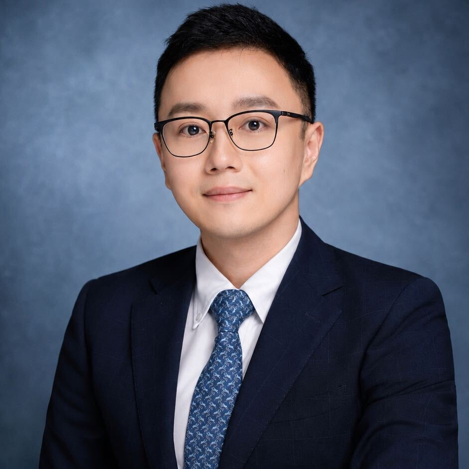
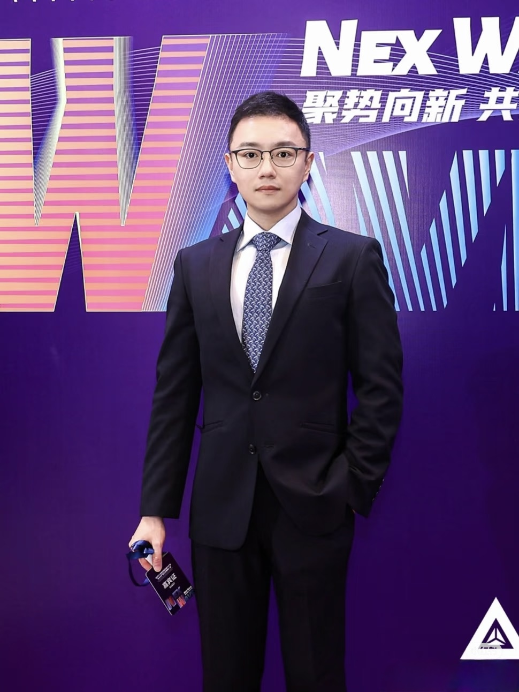

01
银行卡冻结与跨境纠纷
协助分析账户冻结、跨境资金往来与相关法律风险，建立清晰可行的应对路径。

协助分析账户冻结、跨境资金往来与相关法律风险，建立清晰可行的应对路径。
从交易结构、法律尽调到投后合规，为日本酒店及不动产投资提供全流程支持。
结合当地法律、税务与商业安排，支持境外优质资产的收购、持有与管理。
针对跨境身份、投资与财富传承的交汇问题，提供审慎且注重长期性的法律建议。

Alan 律师专注于涉外法律、税务合规及跨境资产相关事务。面对跨法域、多方参与且时间敏感的议题，坚持以事实为基础、以风险为边界，为当事人提供清晰、审慎的判断。
每一次沟通，都从理解您的目标与现实限制开始；每一份建议，都力求能被真正执行。